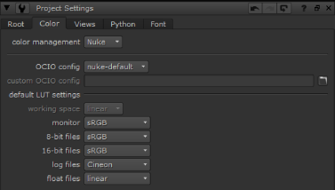

Nuke 使用 OpenColorIO 进行颜色管理。中的所有颜色空间 Nuke ,无论是应用程序附带的还是自定义颜色空间，都在 OCIO 配置文件中定义。
根据您正在使用的 OCIO 配置文件，可以在中设置许多颜色空间选项和角色 (颜色空间的别名) Nuke 。还有默认选项，这些选项会根据您使用的文件类型而改变。当选择默认选项时，颜色空间 Nuke 它的设置列在括号中。
提示: 使用中的选项 偏好 > 项目默认值 > 色彩管理 将它们应用于所有新项目。

| 1。 | 的 色彩管理 下拉决定是否 Nuke 使用从指定的配置中读取的 LUTs 或 Nuke 本地 LUTs。选择 OCIO 使相关的 OCIO LUTs 可用于每个项目的脚本中的读写节点。 |
除之外的所有 OCIO 配置 Nuke -默认 自动将此控件切换到 OCIO .
| 2. | 设置要为此项目使用的 OpenColorIO 配置。 |
Nuke 附带了许多默认配置，但您可以:
• 通过选择使用自定义 OCIO 配置文件 自定义 从 OpenColorIO 配置 下拉列表，然后输入文件路径，或
• 将您自己的配置添加到您的 。 Nuke 文件。请参阅 添加 OCIO 配置 欲了解更多信息。
更改配置将更新 默认颜色转换 因此。如果所选配置对某些转换无效，将显示警告。
| 3. | 的 工作空间 转换决定了哪些颜色空间文件应该转换为 (读) 和 (写)-它是由 Nuke 引擎盖下。 |
注意: 在早期版本中 Nuke ,这个色彩空间是隐藏的，因为 线性 总是被选为 工作空间 。你可能会发现一些操作在色彩空间中工作得更好 线性 。例如，一些转换在 堵塞 色彩空间。
| 4. | 你可以使用 默认颜色转换 下拉菜单以覆盖查看器、缩略图等中的剪辑如何转换为 工作空间 . |
当 Nuke 被选中，读写工作与以前版本的相同 Nuke ,没有集成的 OCIO 转换。当 OCIO 被选中:
• 读取和写入使用 OCIO 变换，没有 Nuke 应用于图像的内置 LUTs。
• 读和写 colorspace 控件用当前选定的 OCIO 配置中定义的 colorspace 列表填充。
• 的 默认 LUT 设置 下拉列表中还填充了在 OCIO 配置中定义的颜色空间或显示变换列表。默认值为每个菜单匹配默认的 Nuke 工作室 具有相同配置的项目。可以使用 Python 回调来覆盖这些默认值。有关附带的默认实现，请参见以下路径 Nuke :
<Install_dir>/plugins/nuke/colorspaces.py
• 的 工作空间 下拉菜单允许您更改 Nuke 内部用于图像处理的颜色空间。这将自动设置 在 写节点和查看器进程的颜色空间，以及 出去 读取节点的颜色空间。这默认为场景 线性 在 OCIO 配置中定义的角色。
• Nuke 工作室 -创建的 comps 不再包含自动注入的 OCIOColorspace 节点。相反，OCIO 颜色管理是在 comp 中自动设置的 项目设置 ,正确的 OCIO 颜色空间直接设置为读写节点。
您可以将自己的 OCIO 配置添加到 Nuke 当它们变得可用时，例如 ACES 的新版本。您还可以添加旧配置以实现向后兼容性。
| 1。 | 导航到您的位置 。 Nuke 平台显示的文件。您可能需要创建一个 。 Nuke 文件夹 (如果不存在)。 |
• Linux:/users/登录名/。nuke
• Mac OS X:/Users/登录名/。nuke
• 窗户: ~ \.nuke
注意:
在窗户上,
。 Nuke
文件夹可以在 HOME 环境变量指向的目录下找到。如果没有设置这个变量 (这是常见的),
。 Nuke
目录位于 USERPROFILE 环境变量指定的文件夹下，该变量通常是
驱动器号:
\ 文档和设置 \ 登录名 \ 或
驱动器号:
\ Users \ 登录名 \
要找出是否设置了 HOME 和 USERPROFILE 环境变量以及它们指向的位置，请输入
% HOME %
或
% USERPROFILE %
进入 Windows 资源管理器的地址栏。如果设置了环境变量，它指向的文件夹将被打开。
| 2. | 在您的数据库中重新创建以下结构 。 Nuke 文件夹: |
~/Plugins/OCIOConfigs/configs/<配置名称>
| 3. | 将配置的内容复制到 配置名称 命名文件夹。应该有一个 Luts 文件夹和 。Ocio 最低限度的文件。 |
| 4. | 如果 Nuke 已在运行，重新启动应用程序以应用更改。 |
| 5. | 您现在可以从 项目设置 > 颜色 > OCIO 配置 下拉列表。 |
|
|